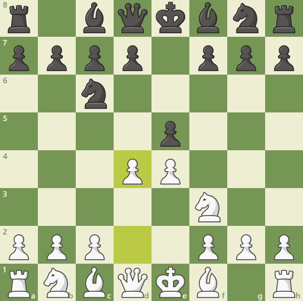

Partia szkocka
Partia szkocka to klasyczne otwarcie szachowe, które rozpoczyna się ruchami 1. e4 e5 2. Nf3 Nc6 3. d4. Jest to dynamiczne i otwarte otwarcie, w którym białe natychmiast atakują centrum, starając się zdobyć przewagę przestrzenną oraz inicjatywę. Ruch 3. d4 stanowi bezpośrednie wyzwanie dla czarnych, zmuszając je do podjęcia decyzji dotyczącej kontroli centrum.
Po ruchu 3. d4, najczęściej spotykana kontynuacja to 3. ... exd4. W odpowiedzi białe zazwyczaj grają 4. Nxd4, rozwijając skoczka na aktywne pole i wywierając presję na centrum. Czarnym pozostaje kilka opcji: mogą zagrać 4. ... Nf6, co prowadzi do głównych linii partii szkockiej, lub 4. ... Bc5, co prowadzi do bardziej otwartych i taktycznych pozycji.
Jednym z głównych wariantów po 4. Nxd4 jest linia 4. ... Nf6 5. Nc3 Bb4, znana jako Wariant Winawera. Czarne próbują związać skoczka białych na c3, co prowadzi do skomplikowanych pozycji, w których obie strony muszą uważać na taktyczne możliwości. Białe mogą odpowiedzieć 6. Nxc6 bxc6 7. e5, co prowadzi do ostrych i otwartych pozycji.
Innym popularnym wariantem jest 4. ... Bc5, gdzie czarne stawiają gońca na aktywnym polu, atakując skoczka na d4 i próbując wywrzeć presję na białe figury. Białe mogą kontynuować 5. Be3, co prowadzi do wymian i dynamicznej gry w centrum.
Partia szkocka oferuje białym możliwość szybkiego uzyskania przewagi przestrzennej i rozwinięcia figur w sposób aktywny i agresywny. Ruch 3. d4 otwiera centrum, co może prowadzić do szybkiego rozwoju inicjatywy i ataku. Czarne, z kolei, mają wiele solidnych odpowiedzi, które mogą prowadzić do wyrównanej gry, jeśli zostaną poprawnie zastosowane.
Zalety partii szkockiej to szybki rozwój figur, możliwość wywierania presji na przeciwnika od samego początku oraz dynamiczna gra. Otwarcie to jest stosunkowo łatwe do zrozumienia, co czyni je dobrym wyborem zarówno dla początkujących, jak i dla zaawansowanych graczy szukających agresywnego otwarcia.
Wady partii szkockiej obejmują możliwość szybkiego kontrataku ze strony czarnych, jeśli białe nie zagrają precyzyjnie. Otwarcie centrum może również prowadzić do pozycji, które wymagają dokładnej znajomości taktyki, co może być trudne dla mniej doświadczonych graczy. Ponadto, jeśli czarne są dobrze przygotowane, mogą znaleźć odpowiednie kontrargumenty i uzyskać równą grę.
Partia szkocka była popularna w XIX wieku, ale jej popularność wzrosła ponownie w XX wieku dzięki takim mistrzom jak Garri Kasparow, który używał jej z powodzeniem w swoich partiach. Jest to otwarcie, które pozwala na dynamiczną i agresywną grę, oferując wiele możliwości zarówno dla białych, jak i czarnych. Dzięki swojej elastyczności i otwartemu charakterowi, partia szkocka pozostaje jednym z ważnych narzędzi w arsenale każdego szachisty, który pragnie zaskoczyć przeciwnika i uzyskać szybki rozwój inicjatywy.
